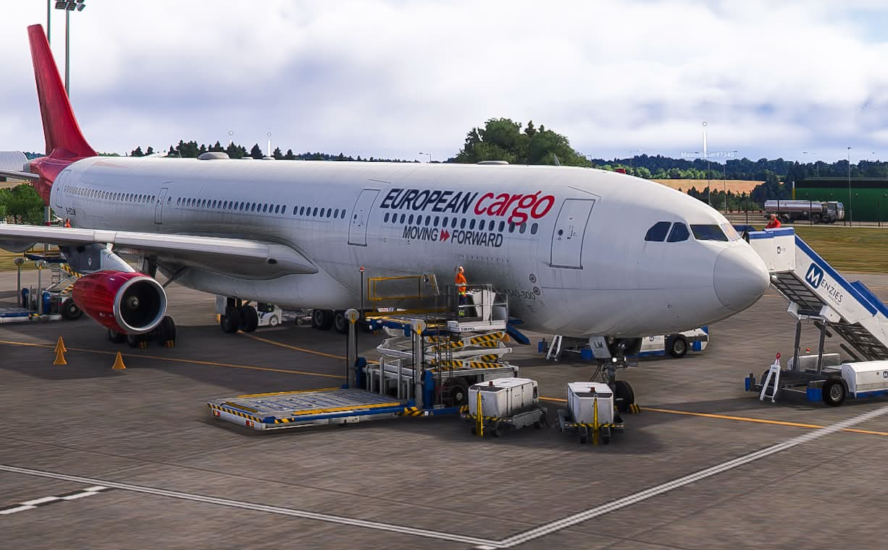
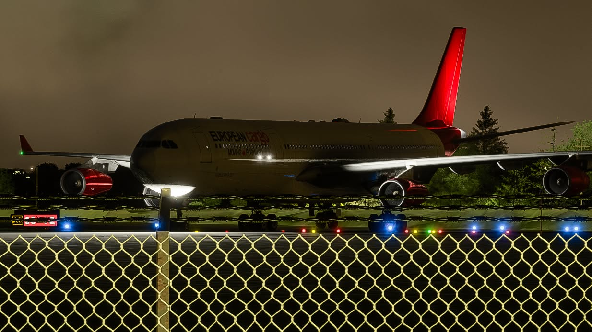

Fleet / Airbus A340
AN UNMISTAKABLE
PROFILE.
Long-haul character. Four-engine presence. A cargo perspective.
Featured aircraft
AIRBUS
A340.
Airbus A340 cargo aircraft for scheduled, charter and seasonal operations.
Our primary cargo aircraft are the Airbus A340-600F and A340-500F. Aerosoft and iniBuilds A340 add-ons are also accepted for ECV flying in Microsoft Flight Simulator 2024. All A340 variants may operate all 28 active scheduled sectors.
- Family
- Airbus A340
- Role
- Virtual cargo operations
- Simulator
- Microsoft Flight Simulator 2024
- Fleet roster
- 10 aircraft · 3 variants
The European Cargo fleet
TEN AIRCRAFT.
ONE CARGO IDENTITY.
| Registration | Aircraft variant |
|---|---|
| G-ECLB | A340-600 |
| G-ECLC | A340-600 |
| G-ECLD | A340-600 |
| G-ECLE | A340-600 |
| G-ECLH | A340-600 |
| G-ECLJ | A340-600 |
| G-ECLK | A340-600 |
| G-ECLM | A340-600F |
| G-ECLN | A340-600F |
| G-ECLF | A340-500 |
7 × A340-600 · 2 × A340-600F · 1 × A340-500. The roster lists the registered variants supplied by ECV. All A340 variants are permitted across the scheduled network.
On the ramp
THE AIRCRAFT. UP CLOSE.




GET TO KNOW YOUR AIRCRAFT.
Use an approved A340 add-on in Microsoft Flight Simulator 2024; Aerosoft and iniBuilds A340 add-ons are accepted. Follow the documentation supplied with your aircraft for performance, limitations and procedures. ECV livery download links will be added when available; SOPs remain TBA.
Explore operationsRecruitment open
THE NEXT FLIGHT.
YOUR FLIGHT.
Recruitment is open. Join the ECV Discord to apply and begin your next cargo chapter.
Join European Cargo